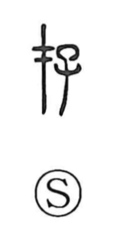

存

Kun: aru, ikiru, omou, tou | On: son, zon
to exist ・ to live ・ to keep ・ to think ・ to inquire
Explanation
存 combines 才 with 子, a child. 才 pictures a sacred marker: a post with a crosspiece and an attached vessel containing a prayer. The sign established a place under divine protection. Joined to the child, it shows that protection extended to the child’s life.
Through the consecrating rite, the child is secured as a living presence. 存 therefore means to live, continue in existence, or be preserved. The related 在 uses the same marker with a sacred axe-head and establishes protected presence in a place.
From keeping a life safe, 存 extends to retaining or keeping something in being. It can also describe what is held in the mind, or the concerned attention shown in asking after another person’s condition.